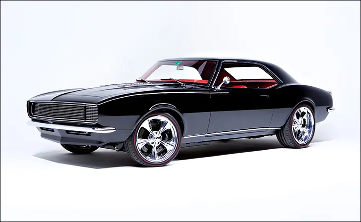
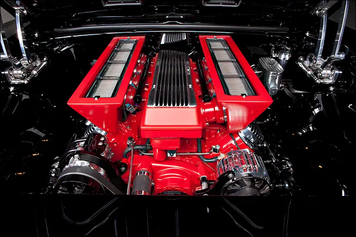
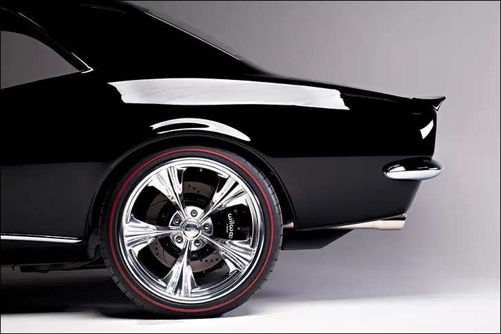
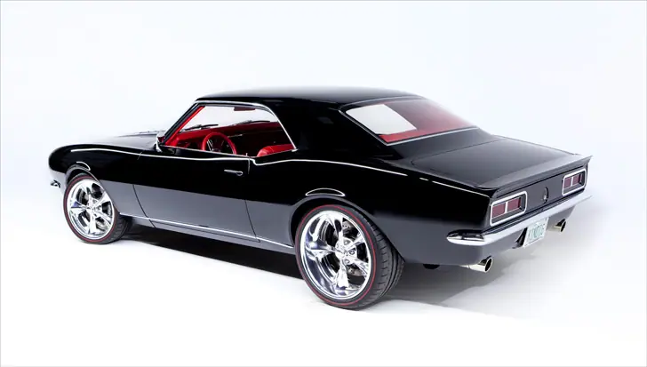
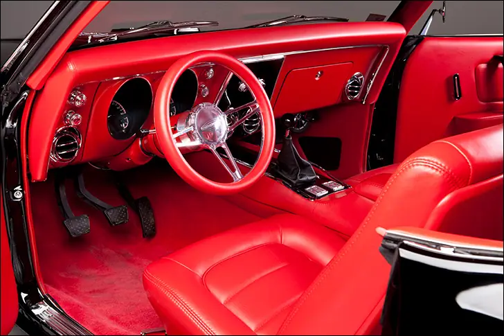
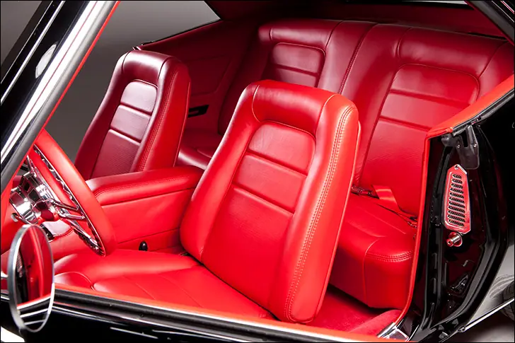

Kindig 68 Camaro

Continuation Camaro
Variation on a theme
So-called “Day-2” muscle cars have collected a considerable following in the last few years. The title applies to cars that feature period-correct bolt-on speed parts and modifications from the ‘60s. Whether they are freshly built, restored, or survivors of the era, Day-2 cars are often more fun to look at than a straight-laced, chalk-mark resto.
Also fun to look at, are cars built by Kindig-It Designs in Utah. The attention to detail and creative modifications are a feast for the eyes, and this slippery ’68 Camaro is no exception. Though it is far too modern be lump into the “Day-2” category, it harkens back to the muscle car era, when big engines and manual transmissions ruled the road; dare I call this F-body a modern take on that vintage theme.

Every good muscle car starts with big horsepower, and for a Chevrolet, there’s no better set of numbers than 454. In this case, we’re looking at an LSX-based bruiser with a slightly smaller bore but longer stroke-compared to the original- to arrive at the magic displacement. The 11:1 compression and 2.20” intake valves are household specs for a rat motor, but the hydraulic roller cam, cross-bolted main caps and forged rotating assembly are welcome upgrades. 50 years of progress yields 630hp in a package about the size and weight of a 327. While the displacement and rocket-ship acceleration are familiar, the induction system is not. A custom built Harrop intake is plumbed to custom vents that mate to the SS hood grills for a sealed cold air path. Hooked to the back of this 21st Century wrecking ball is a Tremec-sourced T-56, and what’s more bad ass than a V8/stick shift muscle car?

Historically speaking, muscle cars were good at peeling your face off in a straight line, peeling tires off the bead in a corner, and peeling your hands off the steering wheel after a fade-inducing panic stop. The Kindig-It Camaro can obviously still melt your face when you punch the go pedal, but the Art Morrison front and rear frame clips keep this thing planted like it’s on rails; you’ll be peeling your face off the side windows if you give it the sauce in a corner. Instead of glowing-red 10” brake drums, six-piston Wilwood brakes boasting 14” rotors give you the sensation typically reserved for fighter jet pilots snagging their tail hook on an aircraft carrier.
Rolling stock is plenty modern but offers a nod to the past; 19/20” Stilleto wheels from Billet Specialties are carved in the timeless five-spoke design, while the Michelin Pilot Super Sport tires have been emblazoned by Diamnond Back Classic Tires with that classic red stripe.

Darth Vader wore black, as did Zorro and Johnny Cash. Black is a dangerous, menacing color that gives a shapely car like the 1968 Camaro a sinister aura. Seeking a tough look, a heavy coat of Mercedes black was applied to the body and from what I can tell in the photos, the paint is still wet. Before the onyx finish was sprayed, the sheetmetal was treated to plenty of attention from the Kindig-It craftsmen, including their own flush door handles, shaved marker lights and badging along with custom window trim that allows the glass to be flush-mounted. The front valance is a carbon fiber piece from Kindig-It Designs as well, while the aforementioned SS-hood grills were handcrafted in house. Modern LED lighting abounds on the exterior, courtesy of Maxtell.

There wasn’t much thought put toward interiors back on Day-2. Unless you were making a sky-high street freak, a few performance gauges and a good shifter rounded out the office accoutrements. Looking for something classier than a few hard-to-see mechanical readings near the floor, a direct-fit HDX-67C-CAM instrument system was screwed to a stock dash bezel, providing the driver with six standard readings in their choice of illumination color. Suppose that during the week the lighting is white with red needles, for a vintage feel, but when the weekend comes, the driver is seeing red, literally. Totally possible with the HDX series and the mobile programming app. Speaking of red, everything between the doors is bright crimson, whether leather, painted steel, or carpet. Even the ididit column and Budnik steering wheel are red, but you can’t miss the three pedals and hefty shift knob in basic black. Stock seats were lightly modified while power window switches are located in the subtle center console.
Sure, at a glance this is a modern pro-touring Camaro, but if you look a little deeper, you’ll see just how stock it is; the best of the original with a sprinkling of aftermarket improvements to create a machine that’s just what the driver wants. Its 1968 all over again.

Also on dakotadigital.com.